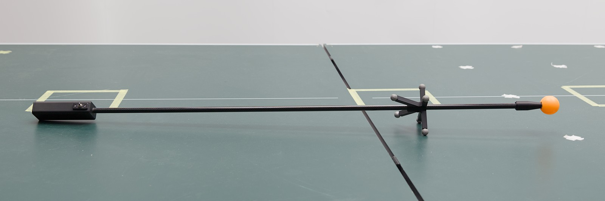

More info: Compute Transformation from Tennicam to World Frame
The tennicam ball tracking is done by a separate camera system and thus it’s reference frame does not naturally coincide with the world frame defined by Vicon. Therefore, a transformation from tennicam’s reference frame to the world frame needs to be determined.
This is done a two-step process:
Record a synchronised trajectory with tennicam and Vicon.
Compute the transformation from the trajectories.
Record Synchronised Trajectory
To record a synchronised trajectory, use the LED stick for the Vicon system with a ball attached to the tip. The centre of the ball should coincide with the origin of the LED stick Vicon marker (at the tip of the stick):
The idea is that both ball tracking and Vicon will report the same physical position, each in their respective reference frame. When moving around and recording positions, we get a synchronised trajectory from both systems from which we can then compute the transformation between the two systems. Since Vicon poses are already provided in the lab’s world frame, this implicitly gives us the transformation from tennicam to world.
To record, perform the following steps:
Start start both Vicon (see How to Start the Vicon System) and the ball tracking (see How to start the server?).
Configure tennicam_client to not apply a transformation on the ball positions by setting both translation and rotation to zero in
~/.mpi-is/pam/tennicam_client/config.toml:[transform] translation = [0,0,0] rotation = [0,0,0]
This is important as otherwise a wrong transformation will be computed in the end.
Run the following commands in separate terminals. They start o80 back ends that connected to the respective systems (see the label on the Vicon PC for its IP):
tennicam_clientvicon_o80_standalone <vicon-ip>
Start the script to record the data:
record_tennicam_vicon_trajectory trajectory.json
Now slowly move the LED stick with the attached ball through the scene to get position measurements from different parts of the robot area. In case one of the systems does not detect the position (e.g. because of occlusion) a warning will be printed in the terminal. This is not a problem, though, you can simply continue by moving to an area that is observed by both camera systems.
When finished, you can stop recording by pressing Ctrl+C. The recorded points will be saved to the specified file (
trajectory.json). This file can be used to compute the transformation in the next step.
Compute Transformation
To compute the transformation from tennicam’s reference frame to Vicon’s reference frame (which coincides with the world frame), simply run the following command on the file recorded in the previous step:
compute_tennicam_to_vicon_transform trajectory.json
It will print the resulting transformation in a format that can directly be copy-pasted into the config file of tennicam_client (see How to fix the transform of the ball?):
[2023-02-24 16:08:46.155] [root] [info] Loaded trajectory with 52 steps.
[2023-02-24 16:08:46.155] [root] [info] Mean error: 0.01898844376609573
[transform]
translation = [0.385887, 0.185144, -0.425765]
# extrinsic xyz Euler angles
rotation = [0.00499201, -0.0156143, -0.0121934]
If you restart tennicam_client with the updated configuration, it should now
report ball positions with respect to the lab’s world frame.
Note
The output of compute_tennicam_to_vicon_transform also shows the mean
error of the computed transformation. If you get a large value here, this
might indicate that there is a problem with the recorded trajectory. In this
case restart the procedure with recording a new trajectory.
To give some orientation: The expected error of tennicam is around 1-3 cm so a transformation error within that order of magnitude is okay.
Verify Transformation
As a simple way to check if the resulting transformation makes sense, one can visualize the tracked ball together with table based on Vicon poses. This allows to qualitatively verify that the relative position of table/robot and ball make sense (e.g. by manually moving a ball along the edges of the table).
This can be done by running tennicam_client_display (see
How to display the tracked ball in MuJoCo?) with the --vicon flag. By this, the pose of the
table in the visualization will be set based on data from the Vicon system.
Relevant Packages
The applications used in these instructions are provided by the packages
tennicam_client (for the tennicam_client executable) and pam_vicon (for the rest).